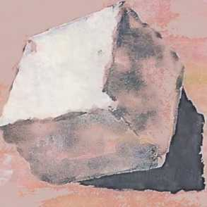

SEL YAYINCILIK
2. BASKI
AIAIN DE BOTTON 1969 yılında İsviçre'de doğdu. Eğitimini Cambridge'de tamamladı. Yapıtları on allı dile çevrildi. Halen Londra'da yaşıyor.
Türk okurunun, Aşk Üzerine, Proust Yaşamınızı Nasıl Değiştirebilir, Öp ve Anlat, Romantik Hareketseks alışveriş ve romanve Seyahat Sanatı adlı kitaplarıyla büyük ilgisini kazanan Alain de Botton'un Status Anxiety adlı kitabı da yayıma hazırlanmaktadır.
* SEL YAYINCILIK / FELSEFE
* SEL YAYINCILIK Babıali Caddesi, 20 /I Cağaloğlu İstanbul TeL/Faks: 0212 511 10 05
Şube: İstiklal Caddesi, Elhamra Pasajı, 258 / 10 Beyoğlu İstanbul Tel.: 0212 244 15 06
Şube: Mahmut Esat Bozkurt Caddesi, l/A Alsancak İzmir Tel.: 0232 463 99 68
http://www.selyayincilik.com E-mail: posta@selyayincilik.com
ISBN 975-570-206-7
SEL YAYINCILIK: 204 Alain de Botton: 06
FELSEFENİN TESELLİSİ Alain de Botton
Türkçesi:
Banu Tellioğlu Altuğ
Kitabın özgün adı:
The Consolations of Philosophy
© intercontinental Litarery Agency Akçalı Telif Hakları, 2000
Kapak resmi:
Temür Koran, 40 x 25 cm. kağıda akrilik
Birinci Baskı: Ocak 2004 İkinci Baskı: Şubat 2004
Baskı-cilt: Yaylacık Matbaası
Litros Yolu, Fatih Sanayi Sitesi, 12/197-203 Topkapı İstanbul
Alain de Botton
FELSEFENİN TESELLİSİ
Tiirkçesi:
Banu Tellioğlu Altuğ